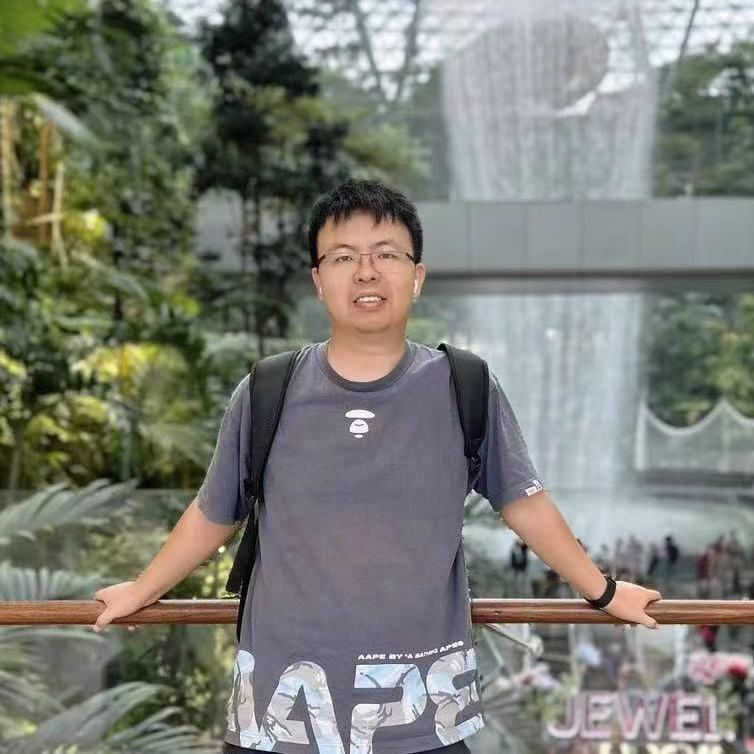

Shuai Wang
Tenure-Track Associate Professor · Principal Investigator
Dr. Shuai Wang is a Tenure-Track Associate Professor at PRLab (模式识别实验室), School of Intelligence Science and Technology, Nanjing University (Suzhou Campus). PRLab is directed by Prof. Tieniu Tan (谭铁牛) and Prof. Caifeng Shan (单彩峰). He received his B.E. from Northwestern Polytechnical University in 2014 under the supervision of Prof. Lei Xie (谢磊), and his Ph.D. from Shanghai Jiao Tong University in 2020 under the supervision of Prof. Kai Yu (俞凯) and Prof. Yanmin Qian (钱彦旻).
Before joining Nanjing University, he was a research scientist in Prof. Haizhou Li (李海洲)'s team at the Shenzhen Research Institute of Big Data, Chinese University of Hong Kong (Shenzhen), where he continues to hold an adjunct position. He also spent 2.5 years as a senior research scientist at Lightspeed & Quantum Studios (光子工作室群), Tencent, leading speech technology R&D for games. He has published more than 60 papers in leading speech conferences and journals.